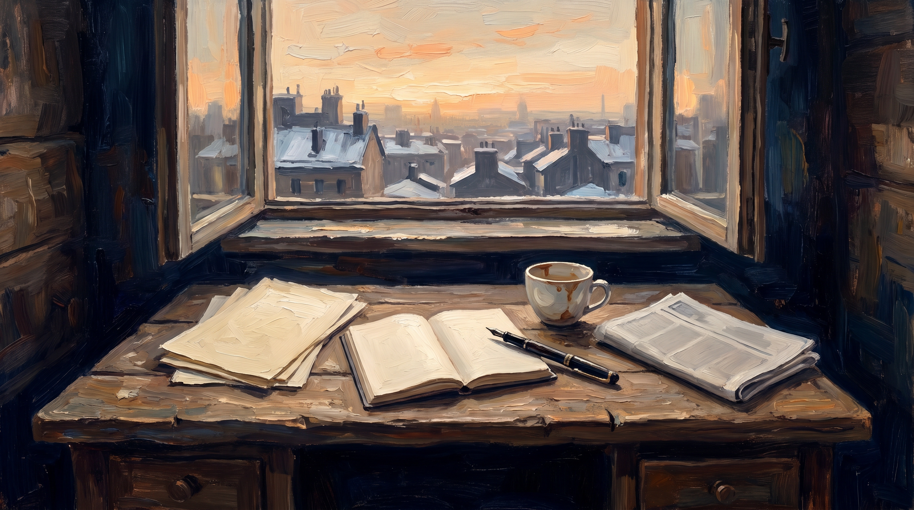

Retrospectief
Wat deze editie samen vertelt
Reflectie · 8 min lezen

Acht artikelen. Acht posities in de samenleving. Acht keer hetzelfde patroon in een ander pak. Als je ze achter elkaar leest, is het onmogelijk om het nog een reeks toevalligheden te noemen. Het is één wet, werkend in elk systeem dat groot genoeg is geworden om zijn eigen mensen te vergeten.
Laat me die wet hier benoemen zoals hij werkelijk is, zonder omhaal.
Wat de acht artikelen samen laten zien
We begonnen bij de papier-industrie. Het subsidiesysteem dat publiek geld systematisch laat stromen naar wie het niet nodig heeft — niet door kwade wil maar door de logica van een filter dat aanvraagkunst beloont en inhoud uitsluit. De wet van de bank, maar dan betaald door iedereen.
Daarna de CEO die zijn bedrijf leidt via dashboards terwijl de werkelijkheid op de werkvloer allang iets anders zegt. Die de kwartaalrapportage heeft leren kennen als zijn enige werkelijkheid en zijn eigen oordeel als gevaar. Die een bestuurder is geworden waar hij een leider had moeten zijn.
De turnaround-consultant die binnenkomt bij een bedrijf in nood en vertrekt met zijn factuur terwijl de oorzaak van het probleem — het oordeel dat ontbrak — nooit in zijn rapport staat. Zijn instrument is zijn model. Zijn model kent geen mensen.
De bankier die krediet verleent aan wie het verleden kan aantonen en weigert aan wie de toekomst zal maken. Die de ondernemer afwijst op basis van een score die meet wat al bestaat en negeert wat nog niet bestaat. Die zijn eigen oordeel heeft ingeleverd voor een algoritme dat hem vrijwaart van aansprakelijkheid.
De verzekeraar die schade definieert op basis van wat de polis zegt en niet op basis van wat de verzekerde heeft geleden. Die de kleine print tot zijn werkelijkheid heeft gemaakt en de werkelijke situatie tot zijn probleem.
De toezichthouder die handhaaft wat meetbaar is en negeert wat betekenisvol is. Die compliance meet en niet effect. Die rapporten telt en niet uitkomsten. Die de sector heeft geleerd hoe je er goed uitziet op papier terwijl je in de praktijk dezelfde fouten blijft maken.
De rechter die recht spreekt op basis van wat in het dossier staat en niet op basis van wat hij ziet. Die de waarheid heeft verwisseld voor het bewijs. Die de procedure heeft verheven boven het oordeel. Die weet dat dit soms verkeerd uitpakt en toch geen andere keuze ziet, want zijn systeem staat het niet toe.
En ten slotte de diepere vraag: hoe is het zo gekomen, wie heeft er belang bij, en gaat dit alleen over instituties of ook over ons eigen brein?
Één antwoord: in elk van deze gevallen is hetzelfde ding verdwenen. Het oordeel van de mens die er het dichtst bij staat. Het oergevoel van de vakman, de lener, de arts, de ambtenaar, de rechter. De onderste hersenlaag die het snelst en het meest accuraat werkt, en die als eerste is weggehaald zodra het systeem groot genoeg werd om zichzelf te organiseren.
Wat dit over onze samenleving zegt
Het is verleidelijk om dit te behandelen als een rij incidenten. Slechte regelgeving hier, een kwaadaardige sector daar, onvoldoende toezicht ergens anders. Dat is de veilige analyse, want ze vraagt om technische reparaties en geen fundamentele eerlijkheid.
Maar wat deze editie laat zien, is geen rij incidenten. Het is een beschaving die in de loop van twee eeuwen haar eigen instrumentarium heeft ontmanteld. Die begon met de terechte bevrijding van willekeur en eindigt met een systeem dat willekeur heeft vervangen door iets ergers: het systematische onvermogen om te oordelen.
De willekeur van de aristocraat was zichtbaar, aanvechtbaar, persoonlijk. Je wist wie er besliste en je kon hem aanspreken. De willekeur van het systeem is onzichtbaar, onpersoonlijk, procedureel gedekt. Je weet niet wie er besliste, want niemand besliste — het formulier deed het. Er is geen loket voor beroep, want de procedure is gevolgd. Er is geen verantwoordelijke, want iedereen deed zijn werk.
Dat is niet eerlijker dan de aristocraat. Dat is erger, want het heeft de illusie van rechtvaardigheid terwijl het het vermogen tot herstel heeft vernietigd.
En de prijs wordt betaald door wie het systeem niet beheerst. Altijd. De ondernemer zonder grant writer. De patiënt zonder advocaat. De werknemer zonder HR-afdeling. De burger die niet weet welk formulier hij moet indienen. Zij zijn de mensen voor wie het systeem zegt te werken, en zij zijn de mensen die het systeem het consequentst buitensluit.
Wat de lezer er mee kan
Ik schrijf dit blad niet om mensen wijs te maken. Ik schrijf het om iets te benoemen wat mensen al weten maar niet hardop durven zeggen.
Want dat gevoel — het gevoel dat er iets niet klopt, dat de procedure je tegenwerkt terwijl ze je zou moeten helpen, dat er niemand is die naar je kijkt terwijl iedereen beweert te luisteren — dat gevoel is er bij mensen. Het is er bij de verpleegkundige die rapporteert terwijl haar patiënt wacht. Het is er bij de leraar die toetst terwijl zijn leerling vastloopt. Het is er bij de bankmedewerker die een ondernemer afwijst terwijl hij weet dat het idee goed is maar de score te laag. Het is er bij de ambtenaar die een regel toepast die voor deze situatie niet gemaakt was.
Wat ik hoop dat je meeneemt uit deze acht artikelen is niet een politiek programma. Het is een herkenning. Het is de taal voor iets wat je al aanvoelde.
Want zodra je het ziet, zie je het overal. In de vergadering die geen beslissing neemt. In de procedure die een uitkomst produceert die niemand wil. In de verantwoordingscyclus die meer kost dan het werk zelf. In de sollicitatie die wordt beoordeeld door een algoritme dat nooit de persoon heeft gesproken. In de zorgpolis die precies datgene uitsluit wat je nodig hebt.
En zodra je het ziet, kun je er ook over spreken. Niet als klaagzang, maar als diagnose. En een diagnose is het begin van behandeling — ook al duurt die behandeling langer dan één editie van één blad.
Uitkijk naar editie 5
Wat editie 4 heeft beschreven, is het systeem zoals het is. Editie 5 — en ik doe hier geen beloften, want het blad maakt zichzelf in de tijd die het neemt — zal gaan over wat mensen doen die het anders doen.
Niet utopische alternatieven. Niet blauwdrukken. Maar concrete mensen, concrete situaties, concrete keuzes waarbij iemand zijn oordeel gebruikte terwijl het systeem hem dat verbood. Waarbij iemand een formulier naast zich neerlegde en een gesprek aanging. Waarbij een beoordelaar zei: ik weet wat de procedure zegt, maar hier is wat de situatie vraagt.
Die mensen bestaan. Ze zijn zeldzaam, maar ze bestaan. En ze zijn het bewijs dat het anders kan — niet als systeem, maar als keuze.
Waarom dit blad bestaat
Ik schrijf Het Open Vizier omdat er te weinig wordt gezegd wat gezegd moet worden.
Niet omdat de andere bladen het niet zien — soms zien ze het prima. Maar omdat de toon van het publieke debat het gevoel heeft van een rechtszaal: niemand spreekt zonder zijn positie te beschermen. Iedereen heeft een stakeholder voor ogen. Iedereen weegt zijn woorden op de schaal van wat aanvechtbaar is en wat niet.
Ik heb die last niet. Dit blad heeft geen adverteerders om te beschermen, geen subsidieverstrekker om tevreden te houden, geen raad van commissarissen om te overtuigen. Het heeft alleen lezers — en de stilzwijgende afspraak dat ik zeg wat ik werkelijk denk, ook als dat ongemakkelijk is voor mensen die het lezen.
Dat is geen vrijbrief voor onzorgvuldigheid. Het is een verplichting tot eerlijkheid. Elk artikel in deze editie heeft mij gevraagd dingen te schrijven die ik liever niet hardop had geschreven — omdat ik weet dat mensen die ik respecteer erin voorkomen, in posities die ik bekritiseer. Maar het alternatief is gemurmel in de struiken. En daarvoor heb ik dit blad niet opgericht.
De samenleving heeft te weinig Open Vizier. Te veel gesloten vizier — te veel mensen die zien wat er is en zwijgen omdat spreken riskant is, omdat het systeem hen niet beschermt, omdat niemand om hen heen het ook zegt. Dit blad is een poging om dat gesloten vizier open te trekken. Niet voor iedereen. Maar voor wie het wil lezen.
Als je tot hier bent gekomen, weet je al waarom.
Dit is editie 4, artikel 9 — het sluitstuk. De serie wordt voortgezet op openvizier.org.